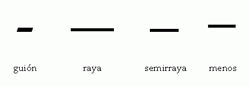

Raya, guion y menos
Tres signos que se confunden a menudo
Revisado: 2011-05-04
Estos tres signos (guion, raya y menos) son tan similares que a menudo se confunden, hasta el punto de que no es raro que a todos se los llame guiones. Pero hagamos un poco de historia.
Si retrocedemos medio siglo veremos que en las cajas españolas había sólo dos signos de la familia: raya y guion. A la raya también se la llamaba menos, sobre todo por los tipógrafos, porque estaba diseñada de forma coherente con el más (+) para que pudiera cumplir esa función matemática.
Llegan los sistemas electrónicos y aparece lo que los ingleses llaman en dash y que en español no se había usado. Por tanto era necesario encontrarle un nombre y por ello se ha propueso reasignar menos. Sin embargo, ese nombre es incorrecto porque también ha aparecido otro signo cuyo diseño corresponde al del más y que es más propiamente el menos. Por esa razón y porque suele ser la mitad de la raya, yo la llamo semirraya (otro nombre es raya menor).

La figura de ejemplo muestra los cuatro símbolos en la fuente Palatino. En ella se ve que el guion y la raya, a pesar de su similitud superficial, siguen patrones de diseño bien distintos: el guion es algo más grueso y, este caso, tiene los extremos inclinados, mientras que el menos es algo más elevado para que se combine mejor con las cifras y siempre tiene un diseño muy sencillo (en otras fuentes es incluso algo más largo que la semirraya). Aquí se ve claramente lo inapropiado de tratar todos estos signos como simples variantes del guion. (Naturalmente, otras fuentes tienen diseños distintos.)
La raya suele indicar separación: en las intervenciones en los dialogos, para incisos que no tienen mucha conexión con el contexto, para introducir un nuevo elemento en una lista, etc. También reemplaza en ocasiones a una palabra o grupo de palabras que no se quieren repetir. (Más en Rayas de inciso y de diálogo)
El guion, en cambio, suele implicar unión: de palabras (científico-técnico), en elementos de palabras (intra-, -ado), a final de reglón para indicar que la palabra continúa en la siguiente línea, en intervalos de cifras (18-24), etc.
El menos es un signo matemático para la resta o en los números negativos.
Y finalmente, tenemos la semirraya, que en español no se había empleado pero que ahora se ve en ocasiones como reemplazo de la raya en medidas cortas, aunque tal uso sea discutible. Es frecuente que, por tener un tamaño intermedio entre el guion y la raya, se confunda con el menos, pero se trata de signos distintos.
Más…
- Tipografía y notaciones científicas
- Cursivas, negritas y versalitas.
- Las abreviaciones: siglas, abreviaturas, símbolos…
- Los paréntesis.
- Siglas: ¿versal o versalita?
- Kerning: el volado de las letras.
- La economía ortotipográfica en las bibliografías
- Uso de las minúsculas
En TeX
En principio, se introducen con - (guion), -- (semirraya) y --- (raya); en modo matemático, - es el menos. Sin embargo, la raya y la semirraya se pueden introducir de modo más conveniente con los propios signos directamente desde el teclado y el paquete inputenc, que tiene la ventaja de que no hace particiones incorrectas. De optar por ASCII, se puede usar babel con spanish y las abreviaciones "+- y "+--, o bien ~-- y ~---, que impiden la división antes del signo.